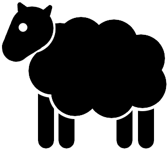

Liczba
W pigułce
Wyobraźmy sobie pasterza, który sprowadza owce do zagrody. Na początku zagroda z owcami jest pusta. Mówimy wtedy, że w zagrodzie jest zero owiec. Do pustej zagrody wchodzi owca. Wtedy liczba owiec w zagrodzie wynosi jeden. Następnie do owcy dołącza kolejna. W zagrodzie są dwie owce. Jeśli tendencja się utrzyma, następnie liczba owiec w zagrodzie będzie wynosić trzy, cztery, pięć, sześć, siedem, osiem, dziewięć. Dla wygody zapisu matematycy używają w tym celu formy krótszej niż słowna – stosują cyfry.
zero: $0$
|  |
jeden: $1$
dwa: $2$
trzy: $3$
cztery: $4$
pięć: $5$
sześć: $6$
siedem: $7$
osiem: $8$
dziewięć: $9$
dziesięć: $10$
jedenaście: $11$
dwanaście: $12$
trzynaście: $13$
czternaście: $14$
piętnaście: $15$
szesnaście: $16$
siedemnaście: $17$
osiemnaście: $18$
dziewiętnaście: $19$
dwadzieścia: $20$
Pojęcie liczby najprościej uzmysłowić sobie poprzez ilość owiec w trzódce. Jednak liczba jako taka jest tworem znacznie bardziej ogólnym i abstrakcyjnym niż owca. Liczba może dotyczyć jakiegokolwiek namacalnego obiektu. Możemy określić liczbę kupionych samochodów, liczbę zjedzonych paluszków albo liczbę obalonych flaszek. W matematyce jednak liczba występuje samodzielnie, jako twór istniejący sam dla siebie i bez odniesienia do owiec ani flaszek. Matematyk po prostu przyjmuje, że jest coś takiego jak liczba jeden, liczba dwa, liczba trzy itd., choć nic nie stoi na przeszkodzie, żeby dopowiedzieć sobie „jedna owca”, „dwie owce”, „trzy owce”.
Liczby, które do tej pory poznaliśmy, czyli $1$, $2$, $3$, $4$, $5$, $6$, $7$, $…$ nazywamy liczbami naturalnymi.
|
|
|
|
|
Konstrukcja coraz większych liczb przebiega następująco: najpierw przebiegamy przez kolejne liczby od zera: $0, 1, 2, 3, 4, 5, 6, 7, 8, 9$ i docieramy do dziewiątki. Kolejne liczby mają zapis wykorzystujący dwie cyfry. Po lewej stronie będzie cyfra $1$, a po prawej ponownie kolejne cyfry od zera do dziewięciu: $10, 11, 12, 13, ..., 19$. Następnie jedynka z przodu zamieni się na dwójkę, a po prawej stronie znowu będziemy przebiegać przez kolejne cyfry: $20, 21, 22, 23, ..., 29$. W następnych turach po lewej stonie pojawi się cyfra $3, 4, 5, 6, 7, 8, 9$ aż do największej liczby dwucyfrowej: $99$. W tym momencie docieramy do liczby sto, która składa się z trzech symboli: $100$. Kolejne liczby, czyli sto jeden, sto dwa, sto trzy... będa posiadały z przodu jedynkę, a następnie dwie cyfry, które zmieniają się zgodnie z dotychczasową regułą. W ten sposób otrzymamy liczby $100, 101, 102, 103, 104, 105, 106, 107, 108, 109, 110, 111, 112, 113, ..., 196, 197, 198, 199$. Przechodząc dalej, z pierwszej cyfry czynimy $2$ i resetujemy ostatnie dwie cyfry. Podobnie postępujemy przy każdym takim cyklu: Jeśli ostatnie dwie cyfry są dzewiątkami, poprzedzającą cyfrę zwiększamy o jeden i resetujemy dziewiątki: $200, 201, 202, 203, ..., 298, 299, 300, 301, 302, ..., 997, 998, 999$. Kolejną liczbą jest tysiąc składający się z czterech cyfr: $1000$. Analogicznie kontynuujemy proces tak długo, jak chcemy, osiągając liczby dowolnie duże.
Aby poznać zapis słowny coraz większych liczb, skorzystaj z poniższego pola. Wpisz za pomocą cyfr dowolną liczbę, aby zobaczyć jej formę słowną.
| $67$ | $18$ |
Aby zapisać w skrócie, że jedna liczba jest większa od drugiej, stosujemy symbole:
- $7 \lt 8$ oznacza "liczba 7 jest mniejsza niż liczba 8"
Pasterz miał $7$ owiec. W ciemnej dolinie odnalazł zbłąkaną owieczkę, więc poprowadził ją właściwą ścieżką. Teraz ma już $8$ owieczek. Trudno się nie zgodzić, że teraz pasterz ma więcej owieczek niż do tej pory, czyli mówiąc inaczej, przedtem miał mniej niż ma teraz. W ten sam sposób, jeśli pasterz Eustachy ma $18$ owieczek, a pasterz Wirgiliusz ma $67$ owieczek, to Eustachy jest zazdrosny.
Spostrzeżenia, których dokonaliśmy, to matematycznie rzecz biorąc porównanie liczb. Ponieważ matematyków bardzo często interesuje, czy jedna liczba jest większa od drugiej, wprowadzono specjalne znaczki na określenie mniejszości lub większości. Stwierdzenie „Liczba $7$ jest mniejsza niż $8$” zapiszemy jako
$$7 \lt 8$$Zaś stwierdzenie „$67$ to więcej niż $18$” zapisujemy jako
$$67 \gt 18$$Te dziubaski to operatory porównania. Łatwo zapamiętać, w którą stronę należy obrócić dziubaska:
Gdy dostajemy dwie liczby, zawsze jesteśmy w stanie je porównać, czyli stwierdzić, czy jedna z nich jest większa, czy mniejsza od drugiej. Czasami jednak może się zdarzyć, że ktoś spyta nas o porównanie liczb, które są takie same. Jeśli pasterz Eustachy ma $18$ owieczek, a pasterz Euzebiusz też ma $18$ owieczek, to Eustachy i Euzebiusz żyją w zgodzie. Zapisujemy to za pomocą znaku równości:
$$18 = 18$$Znaczek $=$ jest symbolem matematycznym, który czytamy jako „równa się” albo „jest równe”. Mówi on tyle, że po jego lewej stronie jest to samo, co po prawej stronie.
Rozszerzenie
Czasami porównanie liczb pozwala na wprowadzenie pewnego kryterium. Gdy w ruchu drogowym uzbierasz więcej niż $24$ punkty karne, tracisz prawo jazdy.
- Pan Zygfryd ma $30$ punktów karnych, więc przekroczył dozwolony limit ($30 \gt 24$).
- Pan Janusz ma $10$ punktów karnych, więc chwilowo jest bezpieczny ($10 \lt 24$).
- Stefan ma $24$ punkty karne. Żyje na krawędzi ($24 = 24$).
W tym przypadku kryterium można sformułować tak: Tracisz prawo jazdy, jeśli
$$\text{liczba punktów karnych} \gt 24$$Zobaczmy inny przykład. Aby zostać przyjętym do elitarnej szkoły imienia Kujona Kołłątaja, należy uzyskać z egzaminu wstępnego przynajmniej ocenę $4$.
- Michaś dostał z egzaminu $2$. Członkowie komisji rekrutacyjnej wzgardzili jego osobą ($2 \lt 4$).
- Onufry dostał z egzaminu $6$. Zostaje przyjęty z otwartymi ramionami ($6 \gt 4$).
- Maciuś dostał z egzaminu $4$. Zostaje przyjęty, chociaż wszyscy krzywo na niego patrzą ($4 = 4$).
Tym razem kryterium można zapisać w taki sposób: Zostajesz przyjęty do koła, jeśli
$\text{ocena z egzaminu} \gt 4$
lub
$\text{ocena z egzaminu} = 4$
Ponieważ zapis ten jest trochę przydługi, wprowadzono symbol uogólniający te dwa fakty:
$$ \text{ocena z egzaminu} \geq 4 $$Operator $\geq$ czytamy „większe lub równe” albo krócej „większe równe”. Podobne znaczenie ma operator $\leq$ („mniejsze równe”). Więcej przygód z tymi wszystkimi dziubaskami czeka w temacie „Nierówności”.